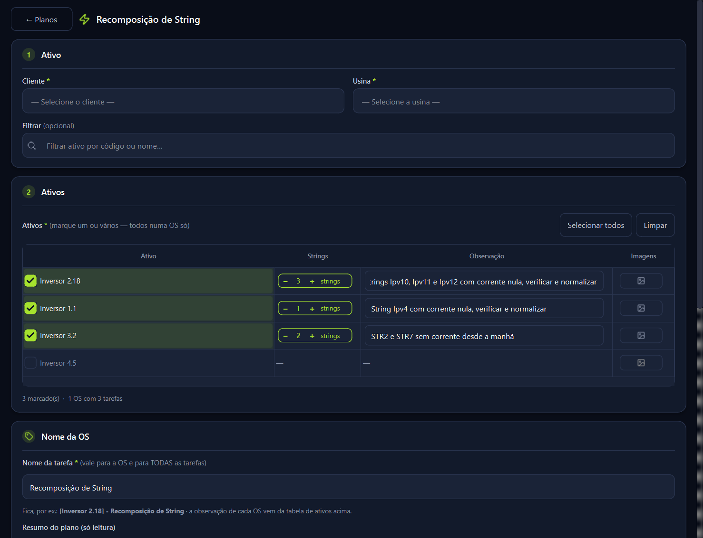
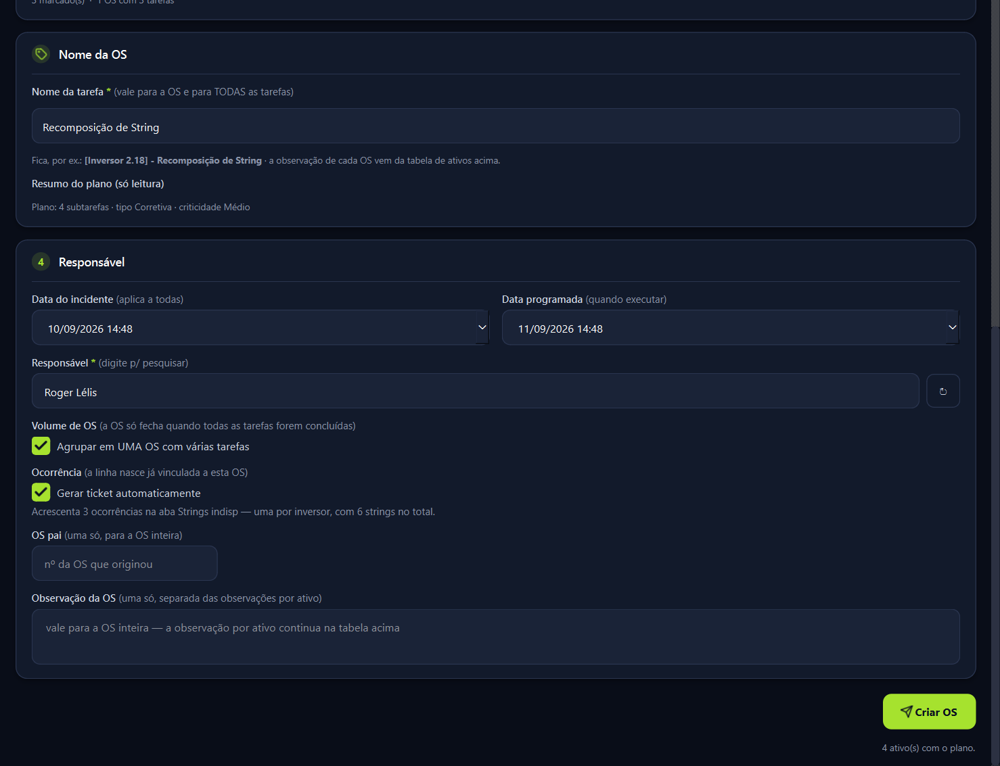
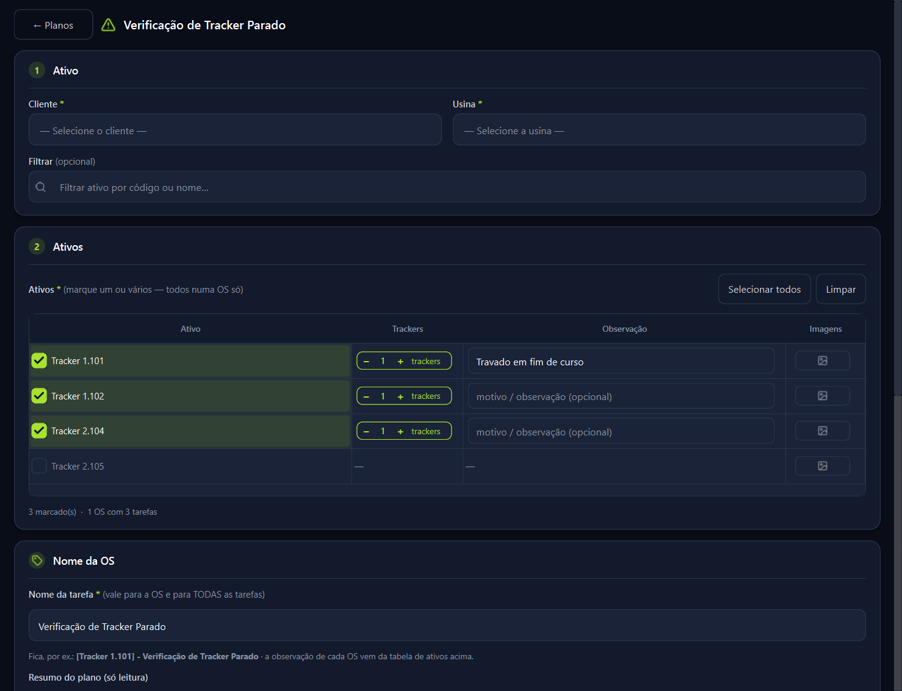
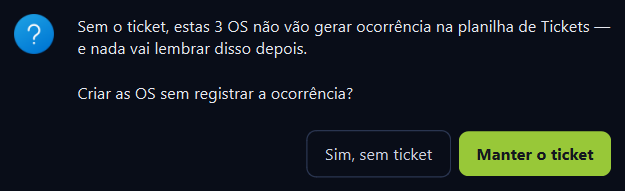
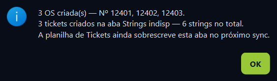
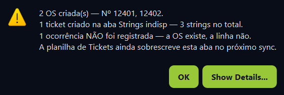

Capturas da tela real do app, não do desenho. O card conta as strings da observação, o marcador nasce ligado e a confirmação do fim conta as ocorrências. Nada foi compilado nem publicado.
O card fica na coluna imediatamente ao lado do ativo, e só nos dois planos que geram ocorrência. Nos outros a coluna nem existe.


Mesmo card, rótulo trocado, sem ler a observação: nasce em 1 e só muda se a pessoa mudar.

As três capturas abaixo são as caixas de verdade, tiradas chamando os métodos da tela.



A régua é função pura e testável; a tela só a chama. Nada de contagem escrita dentro de widget.
contar_strings e observacao_ticket nascem aqui. A quantidade deixou de ser 1 fixo e a frase da observação passou a ir em Comentários gerais.nascer_ticket, e agora a criação agrupada também o chama — antes ela não criava nada.Duas coisas que apareceram no caminho e foram corrigidas junto: a pergunta ao desmarcar dizia "estas 3 OS não vai gerar", e a caixa de falha dizia "1 ocorrência não foram registradas". As duas frases agora concordam no singular e no plural.
A parte que falta é a que nenhum robô faz.
A validação ao vivo é o passo que falta. O certo é criar uma OS de Recomposição de String na TESTE - PA, abrir a aba Tickets e conferir a linha: quantidade, nome do inversor e a frase em Comentários gerais. Se quiser, eu faço isso antes de compilar — ou subo a release e a conferência acontece no primeiro uso real.